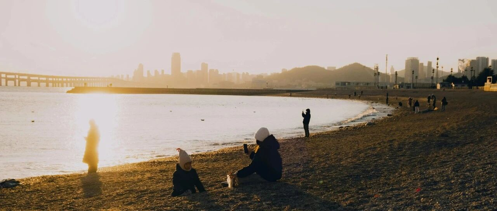

真正的财神~
离岸人民币汇率又跌回到了7.35。
前些日子一度拉升到7.24，一般汇率短时间内急剧拉升的，都会有赚钱的机会，我都会抓住机会在汇率有些操作。
因为最终都会跌回去的。每次看到又在唱好的，觉得这些人缺乏最基本的经济常识，也缺乏逻辑。
汇率，主要影响因素是经济的基本面。某些特殊点位上无形大手出手，这种也是原因之一，7.35就是个它经常出手的点位。
川普对墨西哥和加拿大征收25%关税，对咱们征收10%关税。
前两个，咱们经常借道入境老美，看看多少工厂迁移到墨西哥，再看看加拿大的几个港口来自咱们的货物量大增，就知道了原因。这是要围堵漏洞。
对咱们的10%，显然只是个开始，边加边谈是未来的常态。
川普刚当选的时候，我写过，老美头两年会聚焦在自己内部事务的处理上，再过两年，等内部搞定了，就会腾出手来处理外部，那时才是挑战。
黄金作为一种避险产品，今年会震荡上行，震荡是由于高位导致的，上行是由于需求导致的。
关税大棒落下，老美的通胀短期内会有一定程度的上涨，中长期主要看能不能搞定供应链重塑。
现在美国国内很多生活类、服鞋类的产品，是东南亚产的。但东南亚这些，也有很多是咱们转出去的，如果老美采取溯源手段，那对咱们影响会很大。
通胀数据上涨，意味着美联储停止降息甚至转向加息，这会导致流入市场上的钱，比预期的少，进而导致流入美股的钱比预期的少。
美股会因此转跌。这也是为什么之前一直说，通胀的反复，会改变美股的基本面。
关税大棒一落下，美股将会有一波大跌，科技股将领衔。
我个人账户、家庭账户和两个新账户，都在英伟达设置了三个防守价位节点:110.5、100.5、91.36；
如果能买到，中长期持有，那会特别香。短线的没考虑，震荡将是美股今年的主要特征。
再怎么跌，都会给自己预留充足的仓位和资金，方便加仓和抄底，不会把资金和仓位都消耗光。
新账户在亚马逊设置了210.5和200.5的买入价；特斯拉还是320和285没变；
Meta曾想过要不要上调一些，因为上一个工作日一度突破700美元。后来还是决定按兵不动，就按原计划的585和580设置加仓价。
Meta我个人原本预计今年底有机会走到750-780之间，所以它成了我去年底加仓的重仓股，在570.560.550分别加仓了，目前仓位占比约5.3%，去年中旬还只有1%的仓位占比。
前年选中英伟达，去年中旬选中台积电，去年底我是选中Meta，要回顾历史文章的原因，就是可以发现重点:我怎么做。
原本两个新账户各50万美元，后来发现金额小了，在操作上处处受限，最近两个月会陆续注资进去，等抄底完成后，高点做成负成本，再陆续退出剩50万。嗯，注资后，账户上不超过200万美元。
这么做有是有原因的，资金量大点，好操作，逢高减仓后，我再把本金退出来，利润留在新账户上，到时可以给后面的娃。
美股今年可能会有较大级别的调整，年初我是这么跟朋友说的:美股震荡期，若大盘能有20%的调整，很香
如果这个能实现，那对中长期投资者来说，简直就是福音:对短线投资者来说，是噩梦。
对于投资，我一直强调中长期持有为主，是这样可以吃到公司成长带来的价值红利。
同时，严格遵守投资纪律，不追高，以免自己陷入被动的境地。
只买有价值的公司，不去短炒。
我接下去的重点是个人账户和家庭账户准备买入可口可乐，然后长期持有，吃分红，预计会买5%+的仓位占比。
因此，把原来56的买入价做了一些调整:60和55买入，设置了50的防守价位节点。
对于我个人来说，美股是这十几年真正的财神，尤其是过去这两年。
因此，坚定买入美股，中长期持有，对我来说是毫无疑问，不需要思考的事，只是什么价位买入的问题而已。
配置美元资产，中长期持有，是过去今年一直在做的事。
而股市有风险，面对今年的震荡行情，我在过去两年，不仅陆续把持有的美股做成了低成本和负成本，还在去年较大幅度增加了港险这类投资被动收益型资产，资产的阻尼器。
一切都已经提前做好准备和应对，接下来要做的，就是等待震荡和下跌的到来。
大饼跌到9.55万美元，MSTR也会大跌，大概率会出现300美元以下的价格。
不过我没打算再做波段套利了，个人感觉套利的窗口已经缩窄，风险大，因此没打算刀口舔血。
不要让自己陷入被动的境地，时刻记住投资的首要前提是保值/风险控制，其次才是增值/收益。
… …
今年假期，澳洲和新西兰国人挺多的，出来遇到了很多人。
助理说他去日本，人山人海，今天一早去香港，人也很多。
我们讨论了一些话题，最后他的结论是:
中高净值群体外出度假和过节，是一个趋势；国内大量的低净值群体，不足以支撑消费的基本面，分化和消费降级仍旧是未来的趋势。
我问他怎么应对，他说他也持续配置美元资产，国外赚钱国内花，给自己未来做好准备和规划。
毕竟，国内的钱，太难赚了，卷到极致。
手中有粮，心中不慌。做好自己的事，其他的管它怎么变，再说，也无法左右大环境。
我们能做的，始终只有做好自己的事，做好自己，发挥自己的主观能动性。
就这样吧。